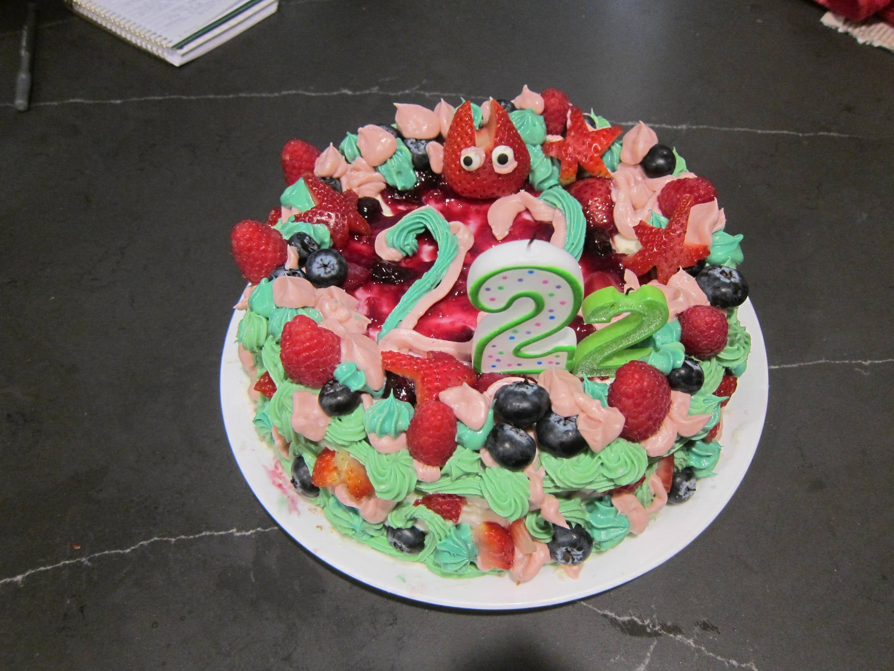
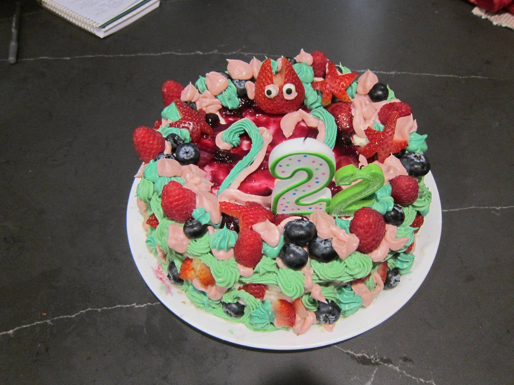
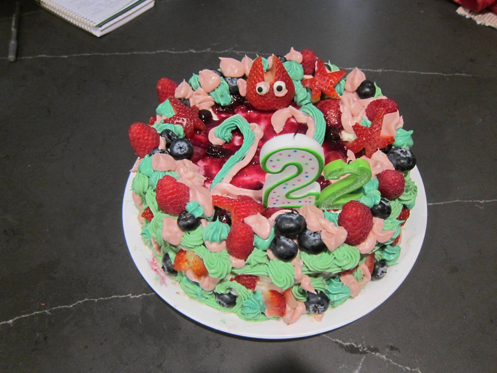

created: march 2, 2025 (my birthday)

flavors and construction: vanilla chantilly cake with whipped cream frosting and berry compote filling
design inspiration: wanted to do a green and pink cake but ended up with a more turquoise-y green than i was expecting, rolled with it. also i had so much fun cutting strawberries into stars for the galentine's cake i couldn't resist doing it again here lol. for a final touch of whimsy i added a little rabbit/totoro-like guy with my favorite googly eye sprinkles.
other notes: